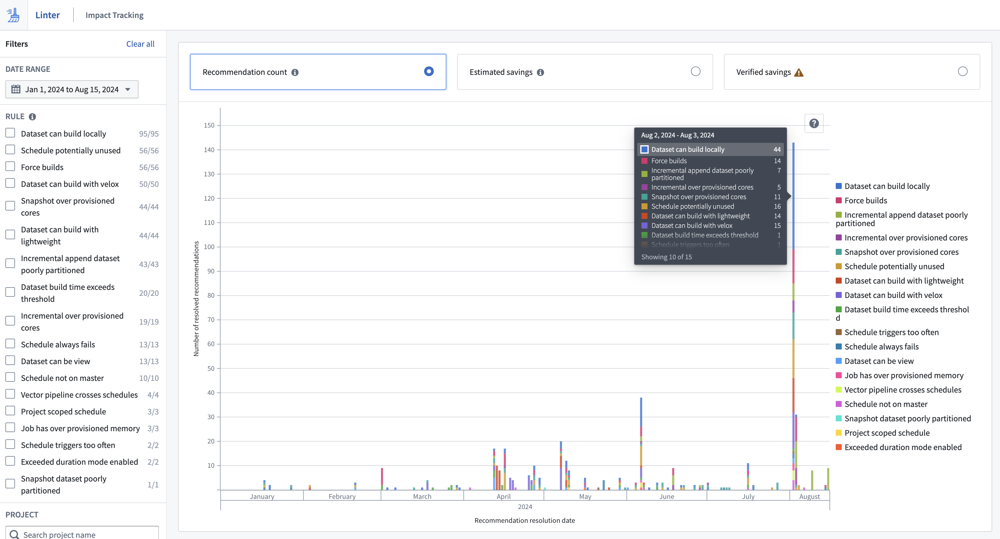

The Linter impact tracking interface allows you to track progress on actioned recommendations and savings estimates. You can reach the impact tracking page by selecting Impact Tracking on the Linter home page. You can use filters to see metrics across a selected time range, rule and project.

Three metrics are surfaced in impact tracking:
Under Investigation status and a snapshot of the current recommendation is taken. Recommendations that a user has not selected will have an Open status and disappear in the next sweep. These recommendations are not tracked and will not show up in impact tracking.Verification typically takes seven days, so an action's verified impact will not be immediately visible on the impact tracking page. All estimates on savings are calculated based on visibility and access provided by APIs. This means that there can be double counting of resources across Linter estimations due to shared resources across rules, for example, a schedule potentially unused rule can cover a dataset that is also mentioned by an incremental append dataset too many files rule. Users should consider this when summing recommendation figures.
Estimated impact and verified impact are estimations that use resource management. The difference in estimation methodologies between the two metrics is that if an action is taken quickly upon recommendation by Linter, the estimated savings will be higher than the verified savings.
For example, assume a Schedule potentially unused recommendation is created on day one: